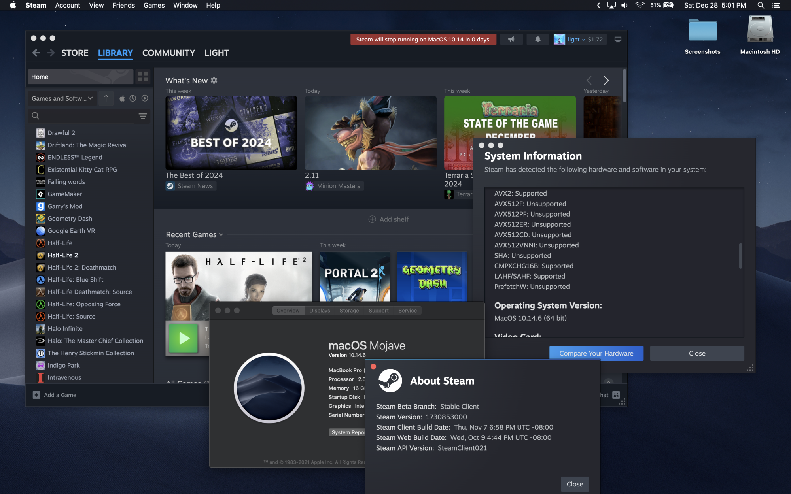
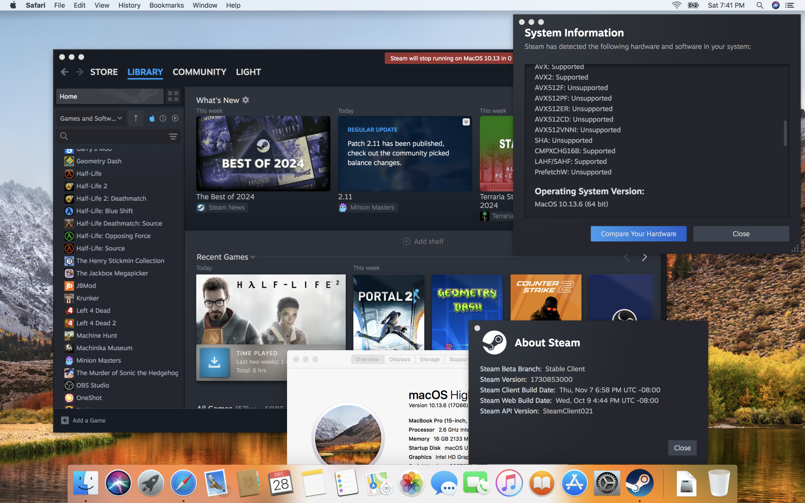
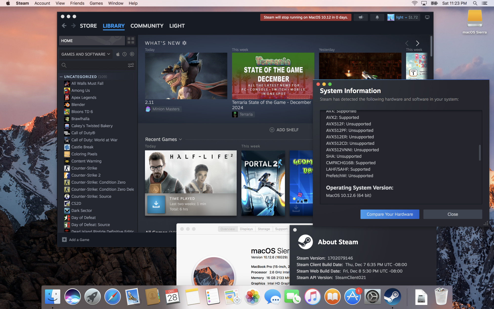

Installing Steam on macOS 10.11 - 10.14
Continuing to use Steam on older macOSes after's Valve discontinuation
This guide is based off from my MacRumors guide and is also partially based off from lightwo’s Blog: Steam Client Downgrades & Survival Kit to only include macOS related instructions.
On May 2025, Valve has changed the game compression/decompression from LZMA to ZSTD format, meaning that any games updated past this date cannot install properly under this format. You can try using a updated macOS to try copying the game files over, or using 3rd party programs such as DepotDownloader to download the files, though I cannot guarantee that these methods may work long term.
Step 1: Installing Steam
Install Steam from Valve's website. Do not the open the app after dragging it to the application folder as by default, it will not download the last client version for your desired OS.
Step 2: Downloading the last supported client
Open terminal window and then run the following command depending on what macOS you are running:
macOS 10.13 - 10.14:
open -a Steam --args -forcesteamupdate -forcepackagedownload -overridepackageurl https://web.archive.org/web/20241107150153if_/media.steampowered.com/client -exitsteam
macOS 10.11 - 10.12:
open -a Steam --args -forcesteamupdate -forcepackagedownload -overridepackageurl https://web.archive.org/web/20240113112425if_/media.steampowered.com/client -exitsteam
There is a chance that Steam could corrupt itself after manual install. If this happens, you will need to completely delete Steam.app and its contents through AppCleaner.
Step 3: Blocking client updates (optional)
While Steam does detect older OSes and prevent itself from downloading updates, it is recommended to block client updates to prevent unintentional bricking.
Create a steam.cfg file on on /Applications/Steam.app/Contents/MacOS with this text:
BootStrapperInhibitAll=enable
BootStrapperForceSelfUpdate=disable
Enjoy!


